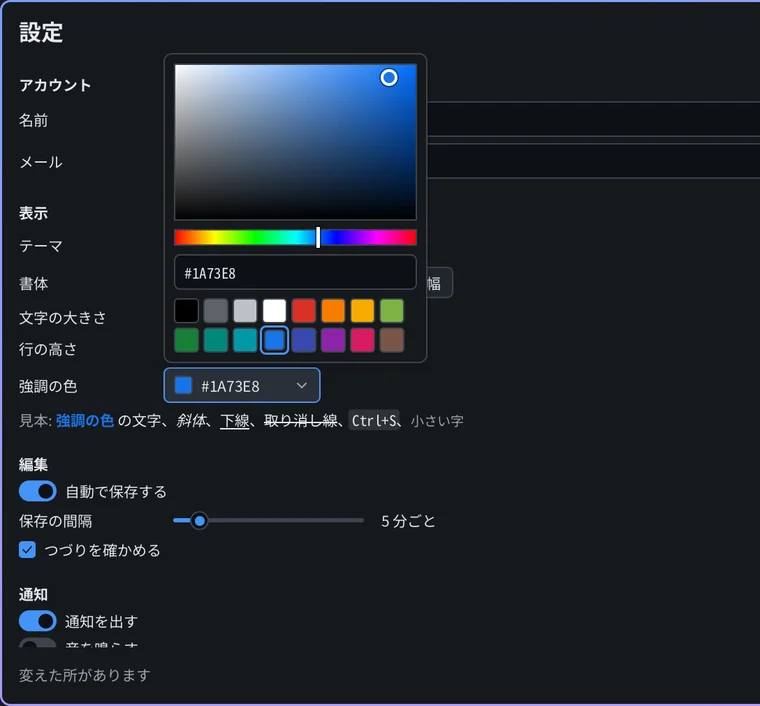
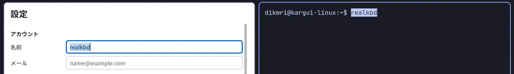
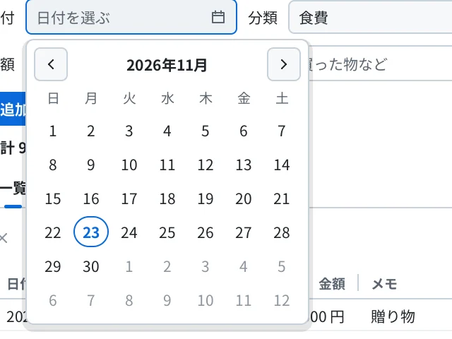

kargui 開発レポート ・ 第 10 章
Linux の窓（Wayland）
0.2 の後の 6 つ目として、kargui が Linux で窓を開けるようにしました。今まで Linux では試験だけを走らせていて、kargui::run を呼ぶと「この OS では窓を開けない」というエラーを返していました。この章では、確かめるために用意した Linux の PC と、AI が画面を操作する道具を紹介します。続けて、OS の境目のファイルを 1 つ足すだけで窓を開く作りと、作者の手の確かめの記録から見つけた不具合を書きます。今回は最初の区切りで、日本語入力と OS のクリップボードはまだありません。
この章で分かること
- Linux の確かめ用の PC と、AI が画面を撮って押す道具の組み方
- Windows と同じ 1 フレームの処理を使い、境目のファイル 1 つで窓を開く作り
- 依存を 13 個に抑えた選び方と、1.5 倍の倍率でくっきり描く方法
- タッチパッドの送りを捨てていた不具合と、記録に書いていない操作は確かめられないこと
- Hyprland の押し続けと、浮かせた窓の大きさの決まり
- 2 つ目の区切りで足した OS のクリップボードと、自分の物を貼る時に合成を通さない理由
確かめ用の Linux の PC
作者が中古のノート PC（第 6 世代の Core i5 の 2 コア、内蔵のグラフィック、メモリ 16 GB、画面 1920×1080）を用意しました。作者の好みで、Debian 13 の最小構成に Hyprland（窓を敷き詰める Wayland の合成）を入れ、Omarchy に似た見た目に組みました。画面は 1.5 倍で使います。Windows の PC から SSH でつなぎ、AI（Claude）が組み立て・試験・操作をすべて行います。
AI が画面を確かめるために、小さな道具 hypr-ai を作りました。Hyprland は、画面を撮る・カーソルを動かす・文字を打つ操作を、許可の画面なしで外から行えます。撮った画面を AI が見て、押す位置を決めます。
| 操作 | 使った仕組み |
|---|---|
| 画面を撮る | grim（Wayland の画面を PNG にする） |
| カーソルを動かす | Hyprland の命令（撮った画面の画素を、倍率 1.5 で割って渡す） |
| 押す・2 回押す | wlrctl（Wayland の仮想のマウス） |
| 押したまま動かす・ホイール | ydotool（OS の入力の仕組みに、本物と同じマウスを足す） |
| 文字を打つ・キーを押す | wtype（日本語も打てる。日本語入力は通らない） |
操作は 1 行ずつ記録に残します。作者に確かめてもらう前に、AI がこの道具で一通り操作し、明らかな不具合を先に直しました。
境目のファイルを 1 つ足す
kargui では、OS を呼ぶ所をいくつかのファイルにまとめています。1 フレームの処理（入力を部品に渡す・描く物の一覧を作る）は Runtime にあり、Windows の窓と試験台が同じ物を使います。そこで Linux の窓は、新しいファイル wayland.rs の 1 つで作りました。Wayland の知らせを kargui の入力に直して Runtime に渡し、できた描く物の一覧を、Windows と同じ CPU の描き方で絵にします。
依存は 13 個増えた
Wayland と話す道具には、よく使われる smithay-client-toolkit（winit や COSMIC も使う）があります。ただ、依存が 57 個になり、組み立てる時に Linux の開発用の部品（libxkbcommon-dev と pkg-config）が要ります。使う人の PC にその部品が無いと、cargo build が失敗します。kargui は Windows でも Win32 を直接呼び、境目を薄く自分で書いているので、Linux も低い層の道具を直接使いました。キー配列を読む libxkbcommon は、動く時に読み込む形（xkbcommon-dl）にしたので、組み立てに開発用の部品は要りません。
kargui の Linux の依存は 62 個から 75 個になりました。Windows の依存は変わりません。
1.5 倍の倍率で、くっきり描く
Wayland の窓は、論理の大きさ（1.5 倍なら 1260×670）で並びます。整数の倍率しか知らないアプリは、2 倍で描いた絵を合成に縮めてもらうか、1 倍で描いた絵を引き伸ばしてもらうので、字がぼやけます。kargui は、合成が「1.5 倍で描いてほしい」と知らせる仕組み（fractional-scale）を受け、物理ピクセル（1890×1005）で描きます。描いた絵を論理の大きさに合わせて置く仕組み（viewporter）で渡すので、合成は拡大も縮小もしません。部品の大きさと文字は、Windows の 150% の画面と同じ計算で決まります。

動いた所
AI が操作して確かめた後、作者にノート PC で 2 回触ってもらいました。入力欄に打つ・2 回押しで単語・3 回押しで全部、Ctrl+A・C・V、Tab、テーマ、つまみ、色の選択、帯を引っ張って送る、リンク、窓の大きさの変化、閉じる。どれも Windows と同じ動きでした。



作者の手の確かめで見つかったこと
1 回目の記録には、エラーや失敗の行が 1 つもありませんでした。ところが、作者に頼んだ操作のうち 4 つ（タッチパッドの送り・キーの押し続け・右クリック・3 回押し）は、記録からは「試していない」のか「動かなかった」のかを区別できませんでした。そこで、AI が検証機で同じ操作を試し、記録に書く項目を足して、作者にもう一度試してもらいました。
1. タッチパッドで送っても、中身が動いていなかった
1 回目の記録には、帯を引っ張って送った跡はありましたが、ホイールの記録は 0 件でした。作りを見直すと、タッチパッドの送りを捨てうる所がありました。Wayland のポインターの知らせは、1 つのまとまり（frame）の中に「源（ホイールか指か）」と「量」が入って届きます。最初の作りは、源が先に届く前提で、量が届いた時に指かどうかを決めていました。決まりの上では、まとまりの中の順番は保証されていません。量が先に届くと、指の送りを捨てていました。
直した後は、まとまりの終わり（frame）まで源と量をためてから決めます。ホイールなら 1 刻みを 96 ピクセル（Windows と同じ）、タッチパッドなら量に倍率を掛けた物理ピクセルを送ります。送るたびに源と量を記録に書くようにしました。2 回目の確かめでは、タッチパッドの指の送りが 175 回届き、上下の両方向に送れました。
Wayland のポインターは、1 つの動きをいくつかの知らせに分けて送り、最後に frame を送ります。frame より前の知らせの順番は決まっていません。源・量・刻みのように、組み合わせて意味が決まる知らせは、frame まで待ってからまとめて扱ってください。
2. キーの押し続けは、Hyprland が繰り返していた
1 回目の記録では、左右の矢印が 0.14〜0.19 秒のばらばらな間隔で届いていました。押し続けが効かず、作者が押し直したのかもしれません。AI が左矢印を 1.2 秒押し続けて試すと、押した知らせが最初の 243 ms 後から 25 ms おきに届きました。これは Hyprland に設定した押し続けの値（待ち 250 ms、1 秒に 40 回）と同じで、繰り返しを作っていたのは Hyprland でした。kargui はその知らせを 1 回ずつのキーとして受け、カーソルを動かしていました。作者の矢印の間隔はばらばらで、1 回ずつ押した跡と読めます。2 回目の確かめでは、押し続けで左に 37 回、右に 34 回動きました。
kargui にも、自分で繰り返す仕組みを入れています。GNOME のように、押し続けの値だけを伝えて繰り返しはアプリに任せる合成のためです。Hyprland では、押した知らせが来るたびに kargui の待ちがやり直されるので、二重に繰り返すことはありません。
3. 浮かせた窓が、画面いっぱいになった
窓の大きさを確かめるため、作業場 9 を「窓を浮かせる」規則にして、設定の見本（560×520 を頼む）を開きました。ところが窓は画面いっぱい（1280×720）になりました。記録に足した知らせの中身を見ると、Hyprland は最初の知らせに「敷き詰めた窓（tiled）」の状態と画面いっぱいの大きさを付けて送っていました。敷き詰め・最大化・全画面の時は、言われた大きさに従うのが Wayland の作法です。同じ作業場で開いた端末も画面いっぱいになったので、kargui の不具合ではなく Hyprland の動きでした。それ以外の最初の勧めの大きさは使わず、アプリが頼んだ大きさにする形にしました（GNOME などで Windows と同じ動きにするため）。
4. 右クリックのメニューが出なかったのは、頼み方の誤り
作者に「入力欄を右クリックしてメニューが出るか見る」と頼みましたが、kargui の右クリックのメニューは、アプリが付けた部品の上でだけ開く作りです。設定の見本の入力欄には付いていないので、出ないのが正しい動きでした（Windows でも同じ）。2 回目は、行に「削除」のメニューが付いた家計簿の見本で試してもらい、開いて押せることを確かめました。
作者からの知らせは「試しました」だけで、どこがおかしかったかは記録から読み取ります（第 7 章）。最初の作りは、タッチパッドの送り・押し続けの繰り返し・左以外のボタンを記録に書いていませんでした。その結果、作者が試したのに動かなかったのか、試していないのかを区別できませんでした。新しい入力の道を作る時は、その道を通った跡が 1 行でも記録に残るようにしてから、作者に渡します。
軽さ
設定の見本は、窓を作ってから最初の絵を出すまで 44 ms でした。作者の 1 回目の確かめの間、入力で描き直した 310 回は、中央が 4.96 ms、9 割が 7.22 ms 以内でした（そのうち絵を描く部分は中央 3.23 ms）。描く広さは 1890×1005 の物理ピクセルで、1 字打つごとの描き直しは変わった所だけなので 1.6〜2.0 ms です。合成へ渡す絵は毎回全体を写します（約 7.6 MB）。2 枚の絵を交互に使うので、変わった所だけを写すと、もう一方の絵が古いまま残るからです。
2 つ目の区切り: OS のクリップボードと地元の日付
最初の区切りでは、写した文字をアプリの中だけで持っていました。2 つ目の区切りで、ほかのアプリと写し合えるようにしました。Wayland のクリップボードは、写した側が文字を持ち続け、貼る側が「ください」と頼んで受け取る作りです。
- 写す: 文字の形（
text/plain;charset=utf-8など 4 つ）を合成に知らせ、最後の入力（キーかボタン）の番号を見せて選択を取ります。ほかのアプリが頼んできたら、渡された口へ文字を書きます。 - 貼る: 今の選択から文字の形を選び、口（pipe）を開いて受け取ります。止まったアプリで固まらないよう、待つのは 1 秒までです。
- 自分の物を貼る: 合成を通さず、手元の文字をそのまま返します。合成を通すと、kargui は貼る側として口を読みながら、写した側として同じ口へ書く知らせを待つことになり、読み終わりません。
あわせて、Date::today() と Time::now() が Linux でも地元の時刻を返すようにしました（今までは世界標準時）。C の標準の関数 localtime_r を呼ぶだけで、依存は増えていません。


作者の 1 回目の確かめでは、kargui で写して端末へ移る操作を 6 回繰り返した跡がありました。その間、端末から kargui へ「ください」という知らせは 1 度も届いていません。AI が検証機で試すと、端末（kitty）で貼り付けの Ctrl+Shift+V を押すと必ず頼みに来て、日本語入力が入っていても同じでした。頼みに来ないのは、Ctrl+V（kitty では貼り付けではない）を押した時だけでした。案内の手順で「Shift も一緒に」と目立たせて書き直し、2 回目は両方向とも動きました。写した直後に毎回 1 回だけ頼みに来ていたのは、日本語入力（fcitx5）のクリップボードの履歴で、端末ではありませんでした。
AI が最初に確かめに使った wl-paste は、焦点が無くても選択を読める特別な仕組み（data-control）を使います。端末のような普通のアプリは、焦点を持った時に合成から渡される選択を読むので、通る道が違います。クリップボードを確かめる時は、普通のアプリ（ここでは kitty）でも、写す・貼るの両方向を試してください。
次の区切り
次は日本語入力（text-input-v3 と fcitx5）です。その後に、読み上げ・ファイルのダイアログ・OS の明暗の設定（どれも D-Bus を使う）、2 つ目からの窓、GNOME の題の帯、X11 の順に足します。利用者の多い GNOME でも、窓ができたところで一度確かめます。中ボタンで貼る Linux のもう 1 つのクリップボード（選んだだけで写る仕組み）も、後の候補です。